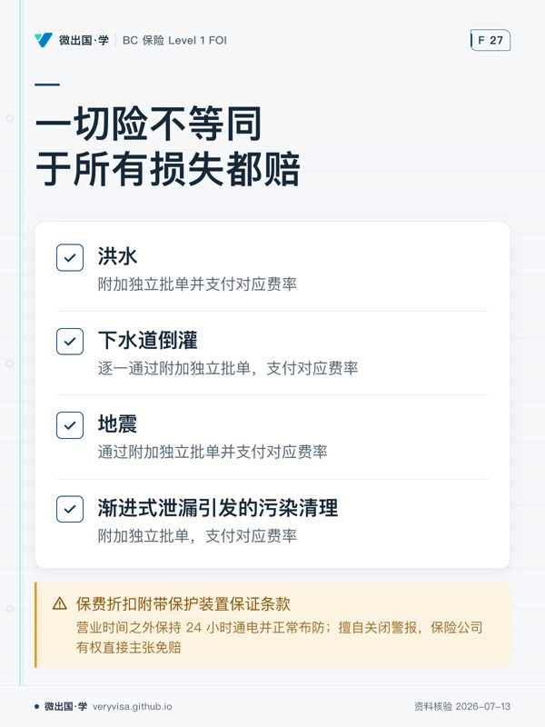

先用商业财产与营业中断核对结论。商业财产与营业中断险（Business Interruption）考核综合财务逻辑与供应链复杂风险，是商业板块的硬核考点。
一、温习目标与商业险全景
商业保险直接面向工商业实体的资产负债表与现金流风险。温习本章需掌握四大核心模块： 1. 商业财产三大基石分类：建筑物（Building）、存货（Stock）与设备（Equipment）的法律边界、价值波动特征及租客装修改良（Tenants' Improvements and Betterments）的处理。 2. 营业中断险（Business Interruption, BI）的双轨机制：毛利润式（Gross Profits Form）与毛收入式（Gross Earnings Form）的赔偿期限与触发前提；必要持续费用（Continuing Expenses）、普通工人工资（Ordinary Payroll）与额外费用（Extra Expense）的精算设计。 3. 设备破损险（Equipment Breakdown Insurance / B&M）：理解传统财产险对“内部机械与电气击穿”的绝对除外，掌握机械故障、压力容器爆炸、存货变质（Spoilage）与设备间接停业的补充机制。 4. 特殊商业财产险与农场保险边界：掌握在途货物（Transit/Cargo）、脱离现场财产（Property Off Premises）、商业犯罪险（Crime），以及农场保险的考纲与实务边界。
| 商业保障项目 | 核心保险标的与触发条件 | 常见误区与实务注意点 |
|---|---|---|
| Building 建筑物 | 建筑物主体、固定机械、永久性附属物及场地维修材料。 | 必须与租客自行添加的短期活动货架、装修改良严格区分。 |
| Stock 存货 | 原材料、在制品、产成品与包装辅料；价值随季节与订单剧烈波动。 | 强烈建议加保月度申报批单（Monthly Reporting），避免共保惩罚。 |
| Equipment 设备 | 办公家具、电脑网络、移动生产机械、展柜等非存货类营业动产。 | 仅保外部意外致损；设备自身内部机械卡死磨损需走设备破损险。 |
| Gross Profits BI | 承保自灾害发生起、直至营业额完全恢复至出险前正常水平的毛利润损失。 | 弥补实体修好后的“客户流失业务爬坡期”；保障期限可设 12/18/24 个月。 |
| Equipment Breakdown | 承保锅炉压力爆炸、电路电气击穿（Electrical Arcing）、机械物理断裂。 | 财产险默认除外上述内部事故；两者无缝拼接方能防范停产绝境。 |
二、底层机制：商业财产三大分类、营业中断与设备破损
1. 商业财产三大分类与月度申报
- 建筑物（Building）：承保物业所有权人的房屋实体及其固定安装的附属机电管道设施。
- 存货（Stock）与月度申报批单（Monthly Reporting Endorsement）： 商业企业的存货具有极强的进出库波动性（例如零售商在圣诞购物季存货可能暴增至平时的五倍）。若按峰值购买固定全年保额，则淡季白白浪费保费；若按平均值购买保额，出险时将面临严重的共同保险不足额惩罚。 月度申报批单机制：被保险人设定一个充裕的最高责任限额（Peak Limit），每月固定向保险人准确申报实际库存盘点价值，年末根据 12 个月的平均实际申报总额进行保费多退少补。实务铁律：若被保险人漏报或迟报，发生损失时保险人依法仅以“上一期最后一次合规申报的金额”为赔偿上限，少报即按比例打折。
- 设备（Equipment）与租户改良（Tenants' Improvements）： 承租人租用毛坯商业空间后自费斥资进行的地面防滑地砖、吊顶消防、隔断墙、专用通风系统等固定装修，在法律上虽然附着于房东的建筑物，但承租人在租约有效期内享有排他的使用价值保险利益（Use Interest）。租客保单通过“装修改良”项目提供重置赔偿。
2. 营业中断险（Business Interruption）的运行原理与两大形式
营业中断险不赔偿一砖一瓦的物理损坏，它赔偿的是“由于工厂或商铺被迫停工停业导致的利润蒸发与持续固定开销”。 - 不可逾越的触发前置（The Property Damage Trigger）： 营业中断险启动的绝对法定义务前置为：企业营业的中断，必须直接由承保财产遭受保单涵盖的致损原因（Direct physical loss or damage by an insured peril to insured property）所引起。若企业停工纯粹是因为市场需求暴跌、经济萧条或员工罢工，BI 保单绝不启动。 - 形式一：毛利润式保单（Gross Profits Form）——推荐首选 - 赔偿期限（Period of Indemnity）：从灾难发生之日起，贯穿整个建筑与机器维修期，并持续延伸至企业的营业额与客流量完全恢复至假如没有发生火灾本应达到的正常水平之日为止（以约定的最大赔偿期限如 12 个月、24 个月为限）。 - 核心价值：制造业与零售业在厂房修复完工后，流失的客户往往已转投竞争对手，销售额需要漫长的爬坡恢复期。毛利润保单对这一至关重要的“营业恢复爬坡期”提供完全保障。 - 形式二：毛收入式保单（Gross Earnings Form）——受限形式 - 赔偿期限：在受损的建筑物和设备按通常勤勉速度被修复、重建或重置之日立即终止（Terminates upon physical completion）！ - 巨大盲区：一旦新大楼剪彩交工，即使开门首月营业额为零、老客户全无，毛收入保单按条款立刻停发赔款。 - 必要持续费用（Continuing Expenses）与普通工资选项（Ordinary Payroll）： 停工期间，部分变动成本（如原材料采购费、水电气用量）随之归零；但固定成本（关键高管薪水、厂房租金、银行贷款利息、财产税、必须维持的设备维护费）依然必须按月硬性支出。BI 保单优先核算并支付此类必要持续费用。企业可在投保时勾选将一线普通工人工资排除或仅保留 90 天，以降低保费成本。 - 额外费用保单（Extra Expense Form）： 针对某些即便遭受重灾也绝对不能停产停业的特殊服务型企业（如报社、数据处理中心、会计师事务所、物流配送站）。该保单不以计算损失营业额为主，而是专门赔偿为了避免业务彻底中断、在临时异地维持营运而紧急额外支付的昂贵加急开支（如紧急租赁替代办公楼的高额临时租金、高薪临时外包加工费、空运加急设备运费）。 - 关联营业中断（Contingent Business Interruption / Extended BI）： 若企业自身的厂房完好无损，但其单一核心原材料供应商（Contributing Property）因大火烧毁导致断料停产，或其包销 80% 产品的唯一下游核心买方（Recipient Property）因灾毁损无法收货，导致被保险人被迫连锁停产。此类外部供应链断链风险，必须单独附加购买关联营业中断险批单。
3. 设备破损险（Equipment Breakdown / B&M）的无缝拼接
所有标准商业财产保险（包括 Commercial Property All-Risks）在“除外责任”章节中无一例外明确除外以下三类事故： 1. 机械故障、机械摩擦发热、内部零件卡死断裂（Mechanical Breakdown）； 2. 电气击穿、电弧击穿、电机线圈自发烧毁（Electrical Arcing）； 3. 锅炉、压力管道及压力容器的内部超压物理爆炸（Explosion of Boilers and Pressure Vessels）。 设备破损险专门将上述三大内部机械电气事故确立为主险保障，并提供特有的两项重大延伸： - 存货变质险（Spoilage Coverage）：食品冷库、生鲜超市或生物制药企业的冷藏机组发生内部机械或电气故障停机，导致数十万冷冻存货腐烂变质，设备破损险全额赔付存货损失； - 设备破损引发的营业中断险：由于关键空压机或变压器自发击毁停产导致的收入损失，与财产 BI 险形成严丝合缝的闭环互补。
三、实务口径与 2026 易错边界（R16 考试 vs 实务分流）
在考场答题与商业客户真实核保方案设计中，必须熟练掌握以下核心规则界限：
1. 农场保险的考纲缺口与实务核保边界
- 考试口径缺口与考纲矛盾：卑诗省 Level 1 的通用考试口径里，关于农场保险（Farm Insurance）的内容为完全零覆盖；然而在 IIBC 公布的一般保险考试大纲中，农场责任与财产险被列在能力考查范围。
- 实务准则与赔付清单的否定：很多复习笔记试图编造一张所谓“全加通用的农场保单统一承保清单”，这是极其危险的实务误区！在加拿大及卑诗省商业保险市场，根本不存在全国统一标准格式的农场财产保单。农场涉及的牲畜被盗、雷击死伤、特种农作物喷洒农药飘移污染、农机上路运行（BC 依靠 ICBC 凭证而非农场责任险）、以及代耕加工等特种风险，必须依靠各商业保险公司的专有农场保单（Farm Form）逐条核定，柜台销售绝不可凭空做出一揽子赔付承诺。
2. 商业防盗与安全保护前置保证（Protective Safeguards Warranty）
- 商业财产保单若因企业安装了中央监控红外报警器（Central Station Alarm）或自动喷淋系统而给予了 15% 至 25% 的高额保费折扣，保单通常会附带一条极严格的保护装置保证条款（Warranty）。
- 违约后果：被保险人必须保证该报警系统在营业时间之外保持 24 小时通电并正常布防；若被保险人为省事擅自关闭警报、断电且未及时通报保险公司，一旦夜间发生入室盗窃或火灾，保险公司有权依据违反法定保证条款直接主张免赔。
3. 商业一切险（All-Risks）对水损与环境污染的普遍除外
- 很多商业租户以为购买了 Commercial All-Risks 就等同于“天下所有损失都赔”。
- 商业一切险通常将洪水（Flood）、下水道倒灌（Sewer Backup）、地震（Earthquake）以及由于渐进式泄漏引发的环境污染（Pollution Cleanup）严格排除在主险之外。商业客户必须逐一通过附加独立批单（Endorsements）并支付对应费率，才能填补重大自然灾害与环保清理敞口。
四、开放式场景闭卷自测
请根据商业财产保险原理、营业中断精算模型与设备破损机制，独立解答以下 5 道开放式商业场景分析题：
-
存货月度申报违规处罚计算： 某大型家用电器批发商为其仓库的存货（Stock）购买了附带月度申报批单（Monthly Reporting Endorsement）的商业财产保单，最高限额（Peak Limit）设定为 5,000,000 加元，免赔额为 10,000 加元。该企业最近一次向保险公司呈报的是 2024 年 9 月末的库存报表，申报库存实际价值为 2,000,000 加元。此后企业财务人员离职，连续三个月未再向保险公司递交盘点表。2024 年 12 月 20 日圣诞节前夕，仓库突发重大火灾，火灾发生当天仓库的实际真实存货价值已达 4,000,000 加元。大火造成了 1,000,000 加元的直接存货物理损失。 请根据月度申报批单的法定条款机制，列出定损理赔的具体步骤，计算出保险人最终应向该批发商支付的赔款金额，并指出批发商承担的不足额损失。
-
营业中断险毛利润式 vs 毛收入式实务抉择： 一家坐落于市中心黄金商圈的高档连锁意大利海鲜餐厅，年营业额 300 万加元，毛利润率 60%。因隔壁商铺夜间失火波及，餐厅厨房与用餐大厅严重焚毁。由于建筑施工许可审批及定制进口石材清关，餐厅工程施工耗时整整 8 个月才全部竣工并取得开业执照。然而在重新开门营业后的前 6 个月内，由于大批老顾客在此期间已习惯去其他餐厅消费，餐厅客流量断崖式下跌，销售额仅为正常水平的 30%，直至重新开业后第 8 个月才通过大力广告宣传恢复至火灾前的经营规模。 请深入对比分析：若该餐厅在投保时分别购买的是（1）毛收入保单（Gross Earnings Form, 12 个月限额）；或者（2）毛利润保单（Gross Profits Form, 24 个月限额），其获赔的营业中断赔偿期限与最终赔款总额将产生何种根本性差异？
-
物理财产损坏前置条件（Trigger）之法律审查： 某位于港口工业区的高端工业机械制造厂，购买了全套商业财产险与附带 100 万保额的营业中断险（Gross Profits Form）。2025 年春，通往该工业区唯一的市政跨海悬索桥因年久失修发生主缆断裂严重险情，温哥华市政府交通局与皇家骑警联合发布紧急民事戒严令（Civil Authority Order），封锁跨海大桥 45 天进行抢修加固，严禁任何货车通行。机械厂因重型运输车辆无法进出，所有订单被迫停滞，直接导致 50 万加元的净利润损失及员工待工工资支出。机械厂厂区建筑及内部机器完好无损、未受丝毫直接物理损伤。机械厂据此向保险公司索赔 50 万营业中断损失。保险公司应否赔付？为什么？
-
设备破损险与传统财产险的责任切分： 一家大型冰淇淋冷链制造企业，其生产车间配备了一套价值 50 万加元的德国进口大型螺杆式冷冻压缩机机组。某日傍晚，因机组内部主润滑轴承长期微细金属疲劳磨损，导致主轴突然发生物理咬死卡死（Mechanical Seizure），继而引发大功率电机出现严重的电弧自发击穿烧毁（Electrical Arcing）。大火被控制在电机外壳内未蔓延至车间建筑。然而，由于冷冻系统彻底停机断电，冷库内储存的价值 20 万加元的特级冰淇淋原浆与成品在随后的 36 小时内全部化为液体酸败变质，且重组该关键电机需要从海外空运配件，导致工厂全面停产两周，产生营业利润损失 8 万加元。该企业仅投保了标准的商业财产一切险（Commercial Property All-Risks），未加保任何附加险。请为该企业进行全面的定损法律责任梳理，指出其面临的惨重保单空白。
-
供应链关联营业中断（Contingent BI）设计： A 公司是一家位于大温哥华地区的知名精酿啤酒制造厂，其核心畅销啤酒的独特风味 100% 依赖于奥肯那根谷（Okanagan Valley）B 农场独家特供的一种有机啤酒花。今年 8 月，一场特大森林野火将 B 农场的整个种植基地与发酵烘干车间彻底焚毁。A 啤酒厂本身未受野火丝毫波及，但由于失去了该独家特供原材料，市面上没有任何替代品可买，A 啤酒厂最核心的酿造生产线被迫关闭停产长达半年，直接导致 120 万加元的巨额停业毛利损失。请深入剖析：A 啤酒厂现有的标准商业财产及自带的普通 BI 保单能否启动赔偿？若要防范该类毁灭性打击，在起保时必须配置何种专业批单？
五、参考答案与判分基准
1. 案例一判分基准（满分 10 分）
- 引用月度申报批单核心罚则：月度申报条款明文规定，若被保险人未按期提交月度盘点报表，发生损失时，保险公司承担的最高赔偿额不得超过被保险人在损失前最后一次如实呈报的金额（Value Reported in Last Report Submitted）。（3分）
- 计算承保打折比例（Reported / Actual at Loss）： $$\text{赔偿比例} = \frac{\text{最后申报价值 (\$2,000,000)}}{\text{出险时真实实际价值 (\$4,000,000)}} = 50\% \quad \text{（3分）}$$
- 计算实际赔付金额（扣除免赔额）： $$\text{折算后损失} = \$1,000,000 \times 50\% = \$500,000$$ $$\text{最终实付赔款} = \$500,000 - \$10,000 (\text{Deductible}) = \$490,000 \quad \text{（2分）}$$
- 批发商自担损失说明：该批发商因财务疏忽断报，直接承担了 51 万加元的巨大自负损失（包括共保惩罚 \$500,000 加上免赔额 \$10,000）。（2分）
2. 案例二判分基准（满分 10 分）
- 毛收入式保单（Gross Earnings）赔偿结果： 毛收入保单的赔偿期在“建筑与设备物理修复完成之日（8个月底）”强制截止。保险公司仅赔偿前 8 个月停工期的实际毛收入损失；重新开门后那 6 个月因客流散失导致的营业额暴跌损失，毛收入保单按条款一分不赔，餐厅面临资金链断裂重创。（4分）
- 毛利润式保单（Gross Profits）赔偿结果： 毛利润保单的保障期涵盖了前 8 个月的施工期，并合法顺延承保重新开业后 6 个月的客流恢复爬坡期，直至其营业额彻底回到火灾前的 100% 正常水平（共计 14 个月，在 24 个月保障期内）。前 8 个月的全部停工利润损失以及重新开业后 6 个月内因销售额骤降蒸发的 70% 差额毛利，毛利润保单均全额予以补足。（5分）
- 结论总结：对于严重依赖老客户复购的餐饮与服务业，毛利润保单是唯一能真正拯救企业破产的正确选择。（1分）
3. 案例三判分基准（满分 10 分）
- 判定理赔结论：保险公司依法全额拒赔。（2分）
- 未满足直接物理损害前置（Property Damage Trigger）： 营业中断保单的首要前提必须是被保险人自有的承保标的财产遭遇了受保危险的直接实体物理损伤。本案中，机械厂自身的厂房、机床完好无损，缺乏启动 BI 保单的法定物理前提。（4分）
- 民事管制条款（Civil Authority Clause）的除外适用： 虽然部分保单附带民事当局介入（Civil Authority）扩展，但该扩展的启动条件必须是“邻近物业因遭遇保单受保危险损毁（如大火阻断道路）引发的政府封锁”。本案大桥封路纯粹是由市政公共设施自身“长期缺乏维护的结构金属老化”引起，老化与疲劳属于通用绝对除外责任，因此即使援引民事管制批单亦无法获得支持。（4分）
4. 案例四判分基准（满分 10 分）
- 财产一切险全面拒赔的法理解剖：
- 压缩机自身价值 50 万：财产一切险明文除外机械磨损咬死（Mechanical breakdown）与内部电气击穿（Electrical arcing），压缩机本身损失属于除外责任，分文不赔；
- 冷藏存货变质 20 万：存货并非毁于火灾或外部撞击，而是温度失控变质（Change of temperature/spoilage），属于典型连带间接损失，标准财产险绝对除外；
- 停产两周营业损失 8 万：缺乏受保财产物理损毁前置，普通 BI 保单彻底免责。（6分）
- 专业补救方案（无缝闭环）： 该企业在起保时必须强制配置设备破损险（Equipment Breakdown Insurance），并特别勾选附加冷藏存货变质批单（Spoilage Endorsement）与设备破损停工营业中断批单。只有在配置了这一闭环后，上述 50 万机器维修、20 万存货与 8 万营业损失才能获得 100% 全额理赔。（4分）
5. 案例五判分基准（满分 10 分）
- 普通财产及自带 BI 无法启动的根源：A 啤酒厂现有的标准保单仅承保其自己工厂物理现场的损失。第三方 B 农场的火灾超出了 A 厂保单的承保物理地点，故普通 BI 无法响应。（3分）
- 指出解决方案：关联营业中断险（Contingent Business Interruption, CBI）： 必须在投保时出具关联营业中断批单（Contingent BI Endorsement），在保单中特别列明关键供货方（Contributing Property）B 农场的法定名称、物理地址及其供货依赖比例。（4分）
- CBI 的赔偿机制： 当被保险人特别绑定的关键供货商场所遭遇保单涵盖的物理危险（如本次森林大火）毁损，导致其无法按约交付关键原材料，由此间接引发被保险人自身的营业额中断与毛利蒸发，由 CBI 批单在约定的限额内全额承担 120 万加元的停业毛利润补偿。（3分）
六、错题复盘与追问清单
在完成商业财产与营业中断深度测试后，结合下表逐一审查商业险知识死角：
| 商业险易错板块 | 典型错误直觉 | 规范精算法理准绳 | 复盘自查追问 |
|---|---|---|---|
| BI 启动条件 | 只要企业因为外力被逼停业，就认为营业中断险必赔。 | 必须以承保财产遭受直接物理损伤（Direct physical damage）为绝对前置。 | “停工是源于承保财产直接被砸被烧，还是纯粹供应链或行政封路？” |
| BI 保单形式选择 | 以为毛收入与毛利润两份保单只是名字不同，赔的钱差不多。 | 毛利润保单保到营业额完全爬坡恢复；毛收入保单在工期竣工日立刻停赔。 | “该商业形态在工程建好重新开门后，是否需要漫长的时间把老客户拉回来？” |
| 设备破损险关系 | 以为买了 Commercial Property All-Risks 机器坏了就能修。 | 财产一切险绝对除外内部机械故障、电击穿与锅炉爆炸，必须配 Equipment Breakdown。 | “该机器损坏是因为外物砸毁撞毁，还是自身内部电弧击穿或机械咬死？” |
| 存货月度申报 | 以为只要买了 500 万限额，平时断报迟报出险照样拿 500 万。 | 断报违约直接按“最后一次申报价值与出险实际价值比例”打折惩罚。 | “客户是否每月按期如实盘点申报？发生损失时比对的是哪一次的报告数据？” |
本页知识卡
不看正文也能拿到这一节的核心内容：先看导读，再看图。点图放大，左右翻页。
- 先看先看第二项，它决定为什么不能拿通用清单处理农场风险。
- 易漏考查范围与复习内容覆盖并不一致，别把范围名单当成现成答案。
- 下一步去讲义，带具体风险逐条核定承保方式。

- 先看先扫四个排除项，再统一看各自怎样补上缺口。
- 易漏报警折扣和主险除外是两件事；前者还带持续布防义务。
- 下一步去练习，先判主险是否排除，再查附加保障。